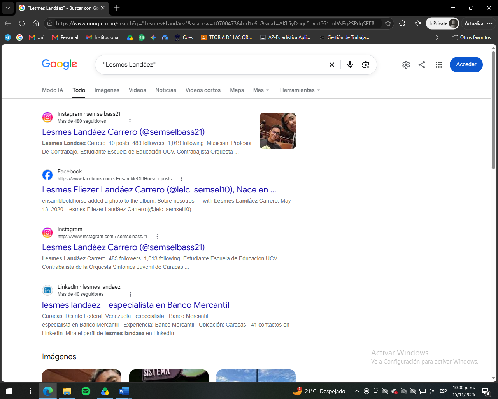

Presentación
Mi nombre es Lesmes Landáez, tengo 26 años, soy estudiante de Educación en la Universidad Central de Venezuela. Además de eso, también soy músico y profesor de música, específicamente del contrabajo. Luego de presentarme por acá, les dejo la recopilación de mis trabajos y presentaciones para esta cátedra; espero sea de su agrado, al igual que esta página web.
Actividades ▼
Actividad 1: Huella Digital
Análisis y reflexión sobre la identidad y el rastro digital en los entornos organizacionales.
1.1. Investigación personal "Lesmes Landáez"
A continuación, se presenta la captura de pantalla correspondiente al registro de la búsqueda realizada en la web:

1.2. Ensayo reflexivo
Análisis crítico y reflexión sobre la huella digital y su impacto en las organizaciones contemporáneas (7 páginas).